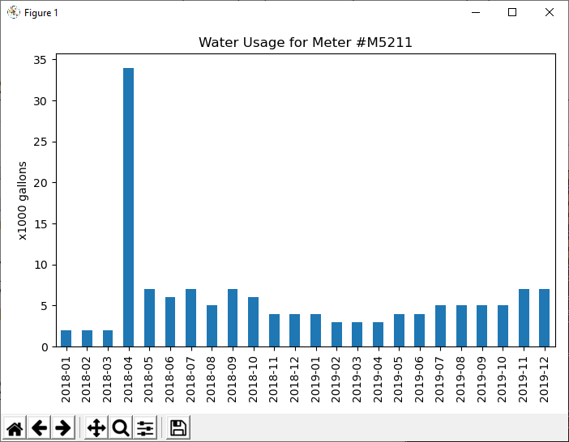
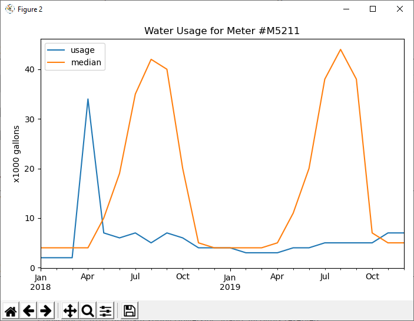

10 Prove Assignment: Data Visualization
Overview
Prove that you can write a Python program that uses
pandas to read and analyze data and draw plots to help
a user visualize trends in the data.
Helpful Documentation
- In previous programs in this course, you wrote code that called the
intandfloatfunctions to convert user input from a string to a number. Dates are similar to numbers. In order to filter the rows in a DataFrame with a user entered date, a program must first convert the user input from a string to a date. One way to convert a string to a date is to use the pandasto_datetimefunction as shown in this code example:import pandas as pd year = input("Please enter a year (ex: 2021) ") text = f"{year}-01-01" date = pd.to_datetime(text) - The
pandasGetting Started Tutorials contain a helpful short section about creating plots. - The
pandasUser Guide contains a long section about creating plots. - The prepare content, checkpoint, and team activity in this lesson taught you how to define a plot with just one series (column) plotted on the y-axis. For example:Sometimes we want a plot to show the values from two columns on the y-axis like Figure 2 in the Sample Run section below. To define a plot with more than one column plotted on the y-axis, pass a list instead of a single string as the y named parameter to the pandas
import pandas as pd import matplotlib.pyplot as pyplot # Read a DataFrame from a CSV file. df = pd.read_csv("filename.csv") # Define a vertical bar plot from the DataFrame. df.plot(kind="bar", x="column_name_1", y="column_name_2") # Draw and show all defined plots. pyplot.show()plotfunction. For example:# Define a vertical bar plot from the DataFrame. df.plot(kind="bar", x="column_name_1", y=["column_name_2", "column_name_3"])
Assignment
During this assignment, you will write and test the remaining parts of the Python program that you began during the previous lesson's milestone. Do the following:
- In the Python program that you began in the previous lesson's milestone, write the code for the
get_int,show_meter_usage, andshow_comparisonfunctions. - Add any additional functions that you would like to write, including functions to draw additional plots.
- Modify the code in the
mainfunction so that your program allows a user to enter a water meter number, a start year, and an end year and then displays at least two plots to help the user visualize the data for the given meter number. - Test your individual functions and program.
Testing Procedure
Verify that your program works correctly by following each step in this testing procedure:
- Download, examine, and run this Python file named
test_meter_usage.pythat containspytesttest functions. Verify that all the test functions pass. If they don't pass, fix the mistakes in your code until they do pass. - Run your program with the inputs shown in the Sample Run section. Verify that your program displays the correct data formatted similarly to the two plots shown in the Sample Run section.
- If you chose to add code to your program so that it displays more plots than the two required ones, verify that the plots are correct.
- Run your program with other inputs. Verify that your program correctly validates user input and displays correct plots.
Sample Run
> python prove_solution
Enter a meter number ('q' to quit): M5211
Enter a start year between 2015 and 2019, inclusive: 2018
Enter an end year between 2018 and 2019, inclusive: 2019
Enter a meter number ('q' to quit): q


Submission
To submit your program, return to I-Learn and do these two things:
- Upload your program (the .py file) for feedback.
- Add a submission comment that specifies the grading category that best describes your program along with a one or two sentence justification for your choice. The grading criteria are:
- 1. Some attempt made
- 2. Developing but significantly deficient
- 3. Slightly deficient
- 4. Meets requirements
- 5. Exceeds requirements